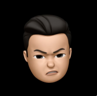

• 1993.04.23 born in Seoul, South Korea • Shanghai Korean School Grad • Korea Aerospace University Grad • Working as a software engineer in GS SHOP from July 2019 • Experience in application, web, AR/VR development and maintenance
• Languages: JavaScript, C#(especially for Unity3D), C++ • Front-End: HTML, CSS, jQuery, React.js • Operating Systems: Linux(Ubuntu), Windows, Mac OS • Database: MongoDB, MySQL • Framework: Express(Node.js) w/OAS, SwaggerAPI • Cloud : AWS, Google Cloud Platform • CI/CD : Jenkins, Git(GItLab, Github) • IDE : Visual Studio Product(Visual Studio 2018, Visual Studio Code) • RPA(Robotic Process Automation): WinAutomation, ProcessRobot, UiPath, Akabot
• AR/VR application development • mobile/pc game development • web development
• 4-1. M reviewBot(web service) • Text extraction of web product description images with Google Cloud Vision OCR / detect problematic keywords • Node.js / Express.js / CSS / MongoDB / AWS EC2 / AWS Lambda / Google Cloud Vision / React.js / OAS / SwaggerAPI
• 4-2. QA/Review process automation project • work process automation for QA/review tasks. based on OCR (Google Cloud Vision, Naver Clova) • Node.js / Express.js / CSS / MongoDB / AWS EC2 / AWS Lambda / Google Cloud Vision / Naver Clova
• 4-3. AR / VR application development • Unity3D, C#, Vuforia, AR Foundation
• 4-4. Automate in-house system using Java SpringBatch • Automate mass data DB backup systems using Java SpringBatch and Jenkins. • Automatically upload large amounts of data (CLOB text of image files) loaded on an existing physical DB to AWS S3. • Java SpringBatch, Jenkins, AWS S3
• 4-5. Broadcast-bot(web service) • Semi-realtime broadcast caption Review system. • detect problematic keywords from caption data (TA). • node.js / Express.js / CSS / MongoDB / AWS EC2 / SwaggerAPI / TA
• 4-6. Review Portal(web service) • Web service that can check various information related to in-house deliberation and violations of deliberation • node.js / Express.js / CSS / MongoDB / AWS EC2 / React.js / OAS / SwaggerAPI
• 4-7. In-house Design system(GUI-Core) • Development and operation of an in-house design system based on Material-UI. • React.js / StoryBook / TypeScript
• 4-8. broadcast system MSA - Frontend development • inhouse back office system MSA project - frontend development • React.js / Next.js / TypeScript
• 4-8. RPA process development / operation • WinAutomation, Process Robot, UIPath, Akabot
• 4-9. AR application development • Unity3D / Vuforia
• 4-10. Golden Goose Deluxe Brand • transparent display application Development for Promotion 2018 • Product Showcase - Developed with Unity3D / C#
• 4-11. Addiction - Kiosk application • Mini Game / Product Showcase • Developed with Unity3D / C# development for showcase 2018